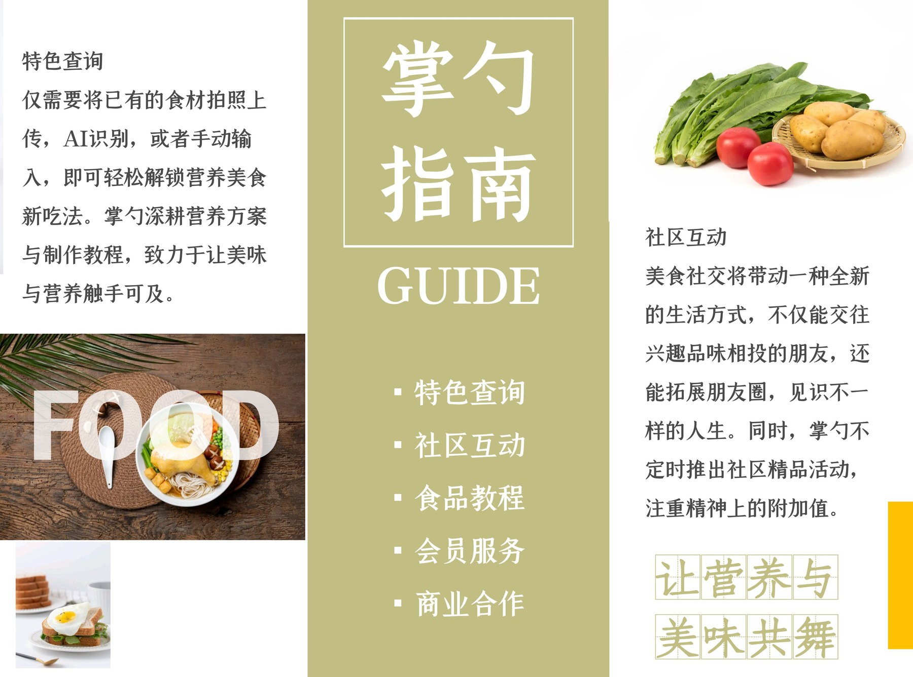
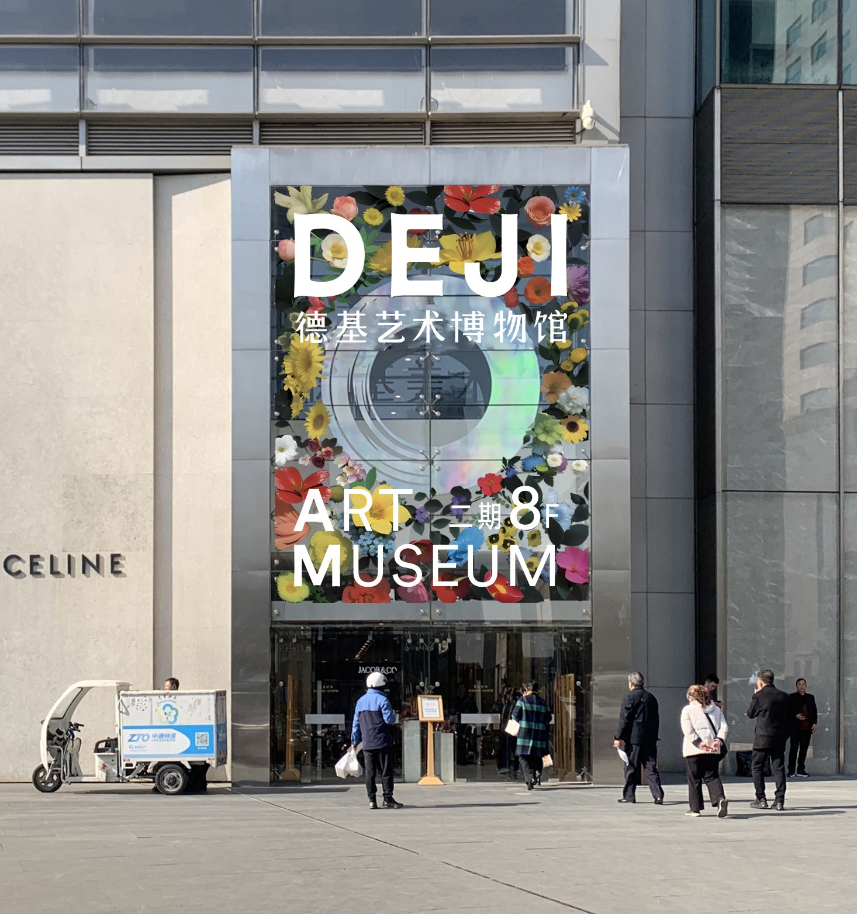
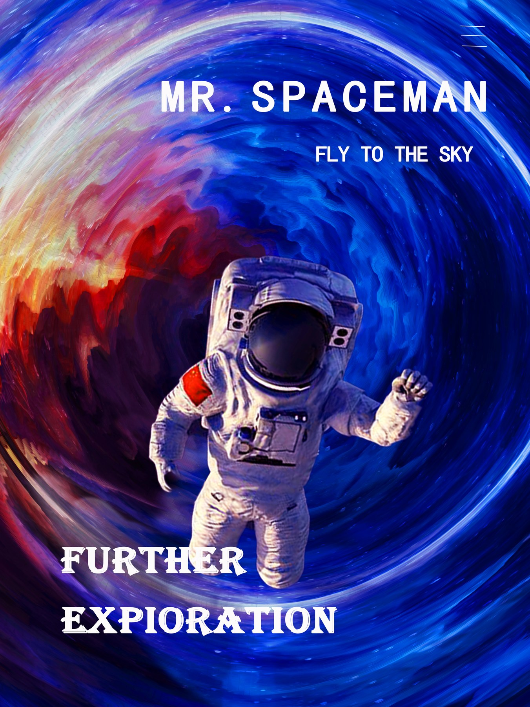
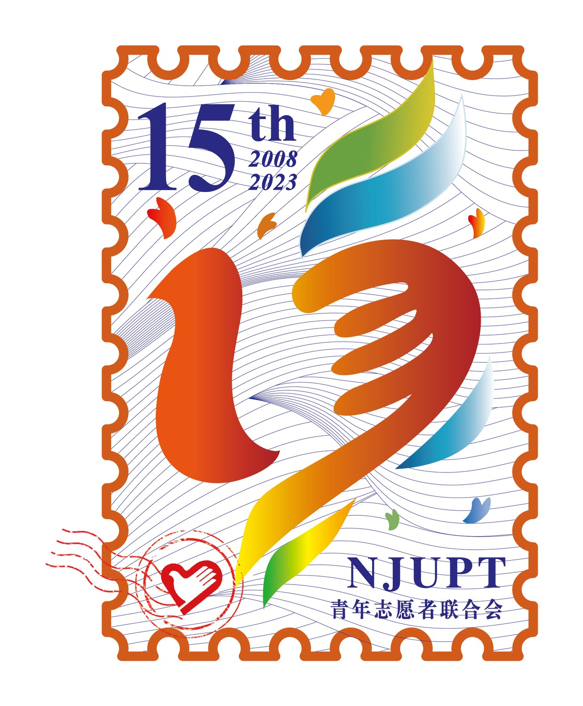
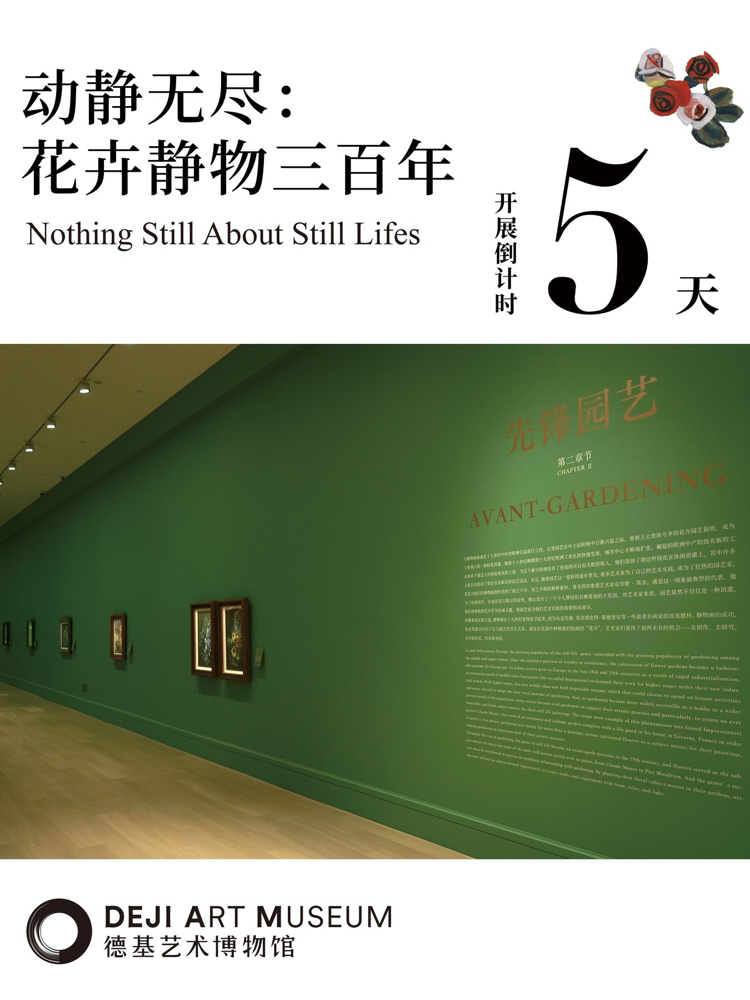
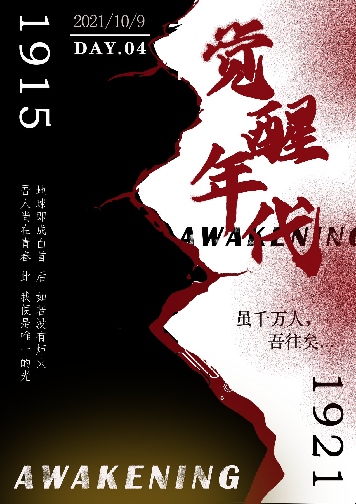

掌勺产品画册
南京邮电大学电子信息硕士在读，研究边缘智能与多智能体决策，预计 2028 年 6 月毕业。有荣耀方案预研与医院一线产品实习经历，正在寻找大模型应用 与 Agent 方向的产品实习，每周 5 天，可实习 6 个月。
我喜欢把好奇心变成能体验的产品：走近用户、拆解问题，亲手写 PRD、做原型，也用代码验证想法。做 AI 产品时，我习惯追问：模型该负责什么？出错时如何兜底？效果怎样衡量？从规则与模型分工，到评测集与 Badcase 复盘，我边做边学，让每次迭代都有依据。
查看简历产品视觉、品牌与海报：练习信息层级，也打磨表达。





